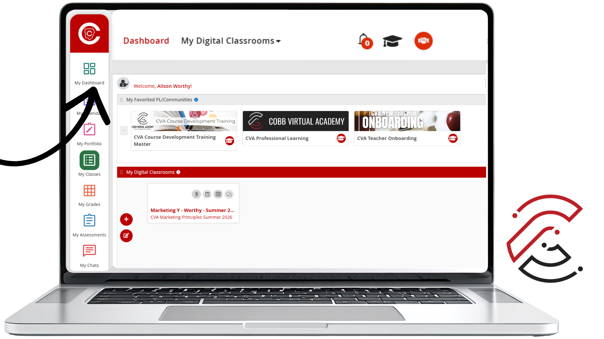
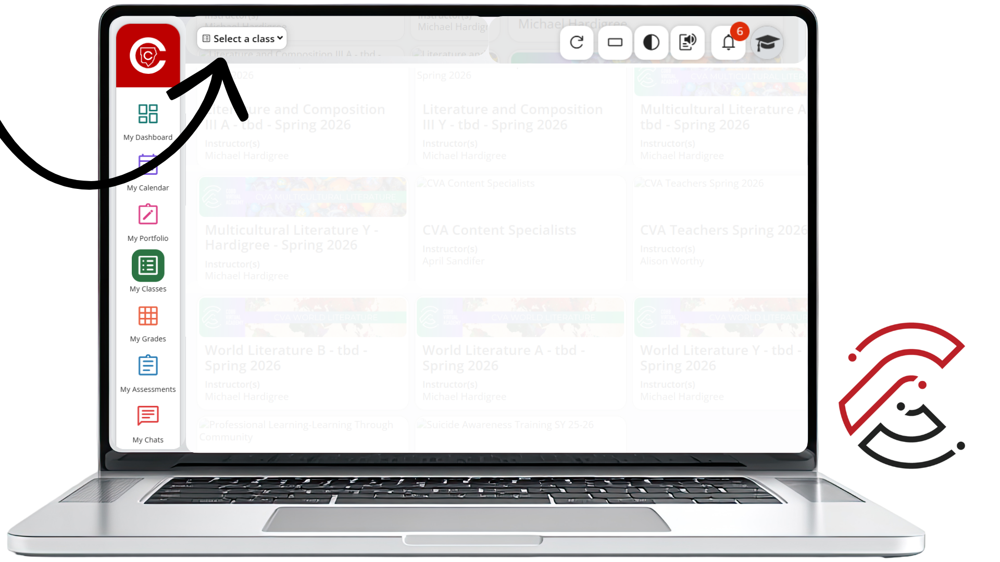
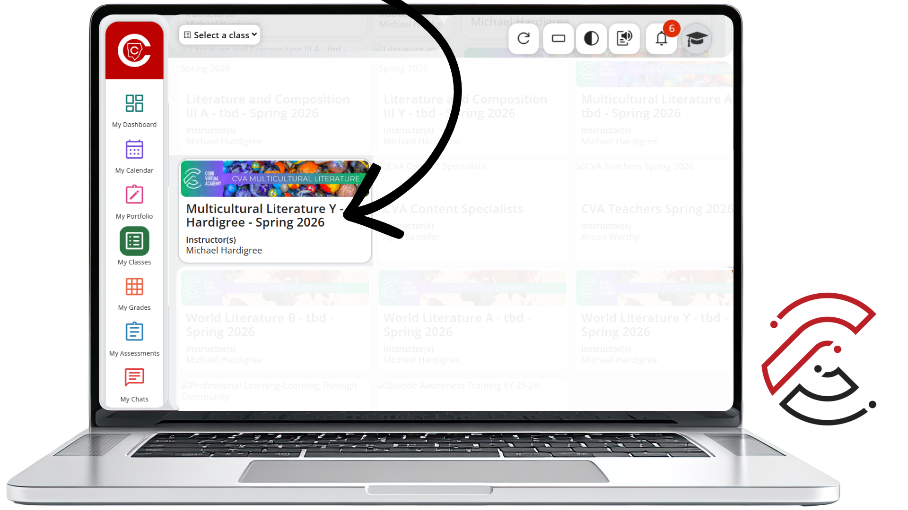

A Practice Student View exists so teachers can see the course the way students actually experience it. It is a reality check that can help you and CVA catch confusion early, check navigation flow, and verify access and visibility.
Instead of only talking through curriculum, the Practice Student View allows teachers to experience the course the way students do. When teachers put on a student hat, they can see firsthand how the learning unfolds.
This can reveal what feels engaging, where confusion might appear, and how student-led discussions actually play out. It also helps surface the questions students are likely to ask and helps teachers feel more confident facilitating meaningful, student-driven learning.
Move through the course as a student to see whether the path feels clear and easy to follow.
Confirm that students can see and access the content, activities, and resources they need.
Identify places where students may misunderstand directions, expectations, or next steps.
See how the learning feels from the student side, including activities, discussions, and pacing.
From the CTLS dashboard, click the graduation cap icon in the top-right toolbar.
Click the image to enlarge.

Use the Select a Class dropdown menu to view the courses connected to the student account.
Click the image to enlarge.

Click the course tile for the class you need to open.
Click the image to enlarge.

Because the CTLS Learn Portal opens in a new browser tab, you can keep your Teacher View open while also checking the course from the Practice Student View.
Tip: Use Teacher View to make or check course updates, then use Practice Student View to confirm what students will actually see.
See whether students can move through the lesson or unit without confusion.
Confirm that assignments, pages, links, resources, and discussions are visible to students.
Notice where students may need extra clarification, examples, or directions.
Experience how discussions, activities, and student-driven learning opportunities unfold.
Practice Student View helps you see what students actually experience.
The CTLS Learn Portal opens in a new tab, so you can keep Teacher View open.
Use My Classes to view your associated CTLS Classes and Professional Learning Courses.
Select the course tile to open the course as your Practice Student.
Practice Student View helps teachers catch confusion before students experience it. Use it to check the course flow, verify access, and better understand how students will move through the learning.